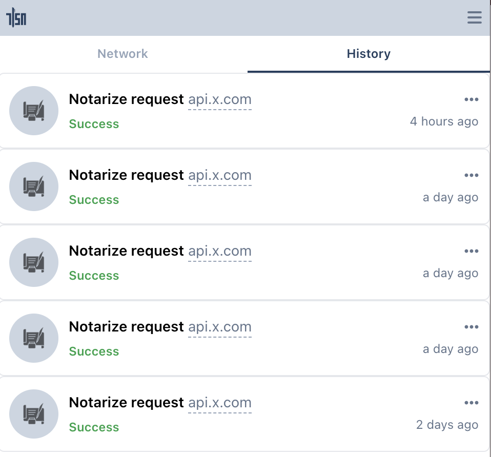
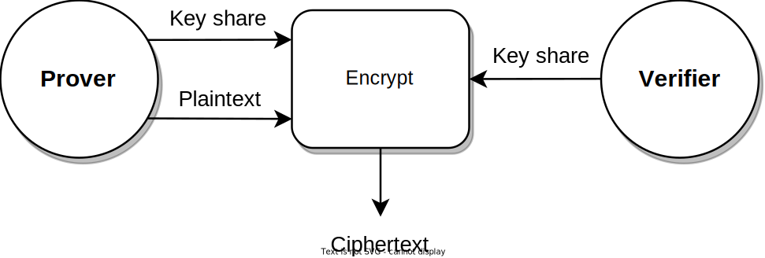

Introduction
Data Provenance without Compromising Privacy, That is Why!
The Internet currently lacks effective, privacy-preserving Data Provenance. TLS, also known as the "s" in "https" 🔐 to the general public, ensures that data can be securely communicated between a server and a user. But how can this user credibly share this data with another user or server without compromising security, privacy, and control?
Enter TLSNotary: a protocol enabling users to export data securely from any website. Using Zero Knowledge Proof (ZKP) technology, this data can be selectively shared with others in a cryptographically verifiable manner.
TLSNotary makes data truly portable and allows a user, the Prover, to share it with another party, the Verifier, as they see fit.
How Does the TLSNotary Protocol Work?
The TLSNotary protocol consists of 3 steps:
- The
Proverrequests data from aServerover TLS while cooperating with theVerifierin secure and privacy-preserving multi-party computation (MPC). - The
Proverselectively discloses the data to theVerifier. - The
Verifierverifies the data.

① Multi-party TLS Request
TLSNotary works by adding a third party, a Verifier, to the usual TLS connection between the Prover and a Server. This Verifier is not "a man in the middle". Instead, the Verifier participates in a secure multi-party computation (MPC) to jointly operate the TLS connection without seeing the data in plain text. By participating in the MPC, the Verifier can validate the authenticity of the data the Prover received from the Server.
The TLSNotary protocol is transparent to the Server. From the Server's perspective, the Prover's connection is a standard TLS connection.
② Selective Disclosure
The TLSNotary protocol enables the Prover to selectively prove the authenticity of arbitrary parts of the data to a Verifier. In this selective disclosure phase, the Prover can redact sensitive information from the data prior to sharing it with the Verifier.
This capability can be paired with Zero-Knowledge Proofs to prove properties of the redacted data without revealing the data itself.
③ Data Verification
The Verifier now validates the proof received from the Prover. The data origin can be verified by inspecting the Server certificate through trusted certificate authorities (CAs). The Verifier can now make assertions about the non-redacted content of the transcript.
TLS verification with a general-purpose Notary
Since the validation of the TLS traffic neither reveals anything about the plaintext of the TLS session nor about the Server, it is possible to outsource the MPC-TLS verification ① to a general-purpose TLS verifier, which we term a Notary. This Notary can sign (aka notarize) ② the data, making it portable. The Prover can then take this signed data and selectively disclose ③ sections to an application-specific Verifier, who then verifies the data ④.

In this setup, the Notary cryptographically signs commitments to the data and the server's identity. The Prover can store this signed data, redact it, and share it with any Verifier as they see fit, making the signed data both reusable and portable.
Verifiers will only accept the signed data if they trust the Notary. A data Verifier can also require signed data from multiple Notaries to rule out collusion between the Prover and a Notary.
What Can TLSNotary Do?
TLSNotary can be used for various purposes. For example, you can use TLSNotary to prove that:
- you have access to an account on a web platform
- a website showed specific content on a certain date
- you have private information about yourself (address, birth date, health, etc.)
- you have received a money transfer using your online banking account without revealing your login credentials or sensitive financial information
- you received a private message from someone
- you purchased an item online
- you were blocked from using an app
- you earned professional certificates
While TLSNotary can notarize publicly available data, it does not solve the "oracle problem". For this use case, existing oracle solutions are more suitable.
What TLS version does TLSNotary support?
TLSNotary currently supports TLS 1.2. TLS 1.3 support will be added in 2024.
Who is behind TLSNotary?
TLSNotary is developed by the Privacy and Scaling Exploration (PSE) research lab of the Ethereum Foundation. The PSE team is committed to conceptualizing and testing use cases for cryptographic primitives.
TLSNotary is not a new project; in fact, it has been around for more than a decade.
In 2022, TLSNotary was rebuilt from the ground up in Rust incorporating state-of-the-art cryptographic protocols. This renewed version of the TLSNotary protocol offers enhanced security, privacy, and performance.
Older versions of TLSNotary, including PageSigner, have been archived due to a security vulnerability.
Motivation
The decentralized internet demands privacy-respecting data provenance!
Data provenance ensures internet data is authentic. It allows verification of the data's origin and ensures the data hasn't been fabricated or tampered with.
Data provenance will make data truly portable, empowering users to share it with others as they see fit.
Non-repudiation: TLS is not enough

Transport Layer Security (TLS) plays a crucial role in digital security. TLS protects communication against eavesdropping and tampering. It ensures that the data received by a user ("Alice") indeed originated from the Server and was not changed. The Server's identity is verified by Alice through trusted Certificate Authorities (CAs). Data integrity is maintained by transmitting a cryptographic hash (called Message Authentication Code or MAC in TLS) alongside the data, which safeguards against deliberate alterations.
However, this hash does not provide non-repudiation, meaning it cannot serve as evidence for the authenticity and integrity of the data to Bob (e.g., a service or an app). Because it is a keyed hash and TLS requires that the key is known to Alice, she could potentially modify the data and compute a corresponding hash after the TLS session is finished.
Achieving non-repudiation requires digital signatures implemented with asymmetric, public-key cryptography.
While the concept seems straightforward, enabling servers to sign data is not a part of the TLS protocol. Even if all data were securely signed, naively sharing all data with others could expose too much information, compromising Alice's privacy. Privacy is a vital social good that must be protected.
Status Quo: delegate access

Currently, when Alice wants to share data from a Server with another party, OAuth can be used to facilitate this if the application supports it. In this way, the other party receives the data directly from the Server, ensuring authentic and unchanged data. However, applications often do not provide fine-grained control over which data to share, leading to the other party gaining access to more information than strictly necessary.
Another drawback of this solution is that the Server is aware of the access delegation, enabling it to monitor and censor the other user’s requests.
It's worth noting that in many instances, OAuth is not even presented as an option. This is because a lot of servers lack the incentive to provide third-party access to the data.
TLSNotary: data provenance and privacy with secure multi-party computation

TLSNotary operates by executing the TLS communication using multi-party computation (MPC). MPC allows Alice and Bob to jointly manage the TLS connection. With TLSNotary, Alice can selectively prove the authenticity of arbitrary portions of the data to Bob. Since Bob participated in the MPC-TLS communication, he is guaranteed that the data is authentic.
The TLSNotary protocol is transparent to the Server. From the Server's perspective, the TLS connection appears just like any other connection, meaning no modifications to the TLS protocol are necessary.
Make your data portable with TLSNotary!
TLSNotary is a solution designed to prove the authenticity of data while preserving user privacy. It unlocks a variety of new use cases. So, if you're looking for a way to make your data portable without compromising on privacy, TLSNotary is developed for you!
Dive into the protocol and integrate it into your applications. We eagerly await your feedback on Discord.
FAQ
- Doesn't TLS allow a third party to verify data authenticity?
- Why is it necessary to add a verifier to the TLS connection?
- How exactly does a Verifier participate in the TLS connection?
- What are the trust assumptions of the TLSNotary protocol?
- What is the role of a Notary?
- Is the Notary an essential part of the TLSNotary protocol?
- Which TLS versions are supported?
- What is the overhead of using the TLSNotary protocol?
- Does TLSNotary use a proxy?
- Why does my session time out?
- How to run TLSNotary with extra logging?
- How do I troubleshoot connection issues?
- Does TLSNotary Solve the Oracle Problem?
- What is a presentation in TLSNotary?
- Why does TLSNotary need an online Verifier? Can't this be done serverlessly in the browser with Zero Knowledge?
Doesn't TLS allow a third party to verify data authenticity?
No, it does not. TLS is designed to guarantee the authenticity of data only to the participants of the TLS connection. TLS does not have a mechanism to enable the server to "sign" the data.
The TLSNotary protocol overcomes this limitation by making the third-party Verifier a participant in the TLS connection.
Why is it necessary to add a verifier to the TLS connection?
One may wonder why the Prover can not simply generate a proof of the TLS connection locally without the help of another party.
This is not possible because of the way TLS is designed. Specifically, TLS utilizes symmetric-key cryptography with message authentication codes (MACs). As a consequence the TLS client, i.e. the Prover,
knows the secret key the Server uses to authenticate data and can trivially generate fake transcripts locally. Introducing another party into the connection mitigates this problem by removing unilateral access to the secret key from the Prover.
How exactly does a Verifier participate in the TLS connection?
The Verifier collaborates with the Prover using secure multi-party computation (MPC). There is no requirement for the Verifier to monitor or to access the Prover's TLS connection. The Prover is the one who communicates with the server.
What are the trust assumptions of the TLSNotary protocol?
The protocol does not have trust assumptions. In particular, it does not rely on secure hardware or on the untamperability of the communication channel.
The protocol does not rely on participants to act honestly. Specifically, it guarantees that, on the one hand, a malicious Prover will not be able to convince the Verifier of the authenticity of false data, and, on the other hand, that a malicious Verifier will not be able to learn the private data of the Prover.
What is the role of a Notary?
In some scenarios where the Verifier is unable to participate in a TLS connection, they may choose to delegate the verification of the online phase of the protocol to an entity called the Notary.
Just like the Verifier would (see FAQ above), the Notary collaborates with the Prover using MPC to enable the Prover to communicate with the server. At the end of the online phase, the Notary produces an attestation trusted by the Verifier. Then, in the offline phase, the Verifier is able to ascertain data authenticity based on the attestation.
Is the Notary an essential part of the TLSNotary protocol?
No, it is not essential. The Notary is an optional role which we introduced in the tlsn library as a convenience mode for Verifiers who choose not to participate in the TLS connection themselves.
For historical reasons, we continue to refer to the protocol between the Prover and the Verifier as the "TLSNotary" protocol, even though the Verifier may choose not to use a Notary.
Which TLS versions are supported?
We support TLS 1.2, which is an almost-universally deployed version of TLS on the Internet. There are no immediate plans to support TLS 1.3. Once the web starts to transition away from TLS 1.2, we will consider adding support for TLS 1.3 or newer.
What is the overhead of using the TLSNotary protocol?
Due to the nature of the underlying MPC, the protocol is bandwidth-bound. We are in the process of implementing more efficient MPC protocols designed to decrease the total data transfer.
With the upcoming protocol upgrade planned for 2025, we expect the Prover's upload data overhead to be:
~25MB (a fixed cost per one TLSNotary session) + ~10 MB per every 1KB of outgoing data + ~40KB per every 1 KB of incoming data.
In a concrete scenario of sending a 1KB HTTP request followed by a 100KB response, the Prover's overhead will be:
25 + 10 + 4 = ~39 MB of upload data.
Does TLSNotary use a proxy?
A proxy is required only for the browser extension because browsers do not allow extensions to open TCP connections. Instead, our extension opens a websocket connection to a proxy (local or remote) which opens a TCP connection with the server. Our custom TLS client is then attached to this connection and the proxy only sees encrypted data.
PSE hosts a WebSocket proxy that you can use for development and experimentation. Note that this proxy supports only a limited whitelist of domains. For other domains, you can easily run your own local WebSocket by following these steps.
Why does my session time out?
If you are experiencing slow performance or server timeouts, make sure you are building with the --release profile. Debug builds are significantly slower due to extra checks. Use:
cargo run --release
How to run TLSNotary with extra logging?
To get deeper insights into what TLSNotary is doing, you can enable extra logging with RUST_LOG=debug or RUST_LOG=trace. This will generate a lot of output, as it logs extensive network activity. It’s recommended to filter logs for better readability. The recommended configuration is:
RUST_LOG=trace,yamux=info,uid_mux=info cargo run --release
In the browser extension, you can change the logging level via Options > Advanced > Logging Level.
For the notary server, please refer to this on how to change the logging level.
How do I troubleshoot connection issues?
If a TLSNotary request fails, first ensure that the request works independently of TLSNotary by testing it with tools like curl, Postman, or another HTTP client. This helps rule out any server or network issues unrelated to TLSNotary.
Next, confirm that your request includes the necessary headers:
Accept-Encoding: identityto avoid compressed responses.Connection: closeto ensure the server closes the connection after the response.
If the issue persists, enable extra logging with RUST_LOG=debug or RUST_LOG=trace for deeper insights into what TLSNotary is doing.
If you are connecting through a WebSocket proxy (e.g., in the browser extension), double-check that the WebSocket proxy connects to the intended domain. Note that PSE's public WebSocket proxy only supports a limited whitelist. If you use a local proxy, make sure the domain is correct.
Does TLSNotary solve the Oracle Problem?
No, the TLSNotary protocol does not solve the "Oracle Problem". The Oracle Problem refers to the challenge of ensuring that off-chain data used in blockchain smart contracts is trustworthy and tamper-proof. While TLSNotary allows a Prover to cryptographically authenticate TLS data to a designated Verifier, trust is still required in the designated Verifier when it attests to the verified data on-chain. Therefore, this is not a trustless, decentralized solution to the Oracle Problem.
TLSNotary can be used to bring data on-chain, but when the stakes are high, it is recommended to combine TLSNotary with a dedicated oracle protocol to mitigate these risks. Multiple projects are currently exploring the best solutions.
What is a presentation in TLSNotary?
In TLSNotary, a presentation refers to data shared by the Prover to selectively reveal specific parts of the TLS data committed to earlier during the attestation phase. By using these earlier commitments, the Prover can choose to disclose only particular segments of the TLS data while keeping other parts hidden or redacted. This enables a flexible and controlled way to share proofs, ensuring that sensitive information remains private.
The term “presentation” is inspired by similar terminology in the W3C Verifiable Credentials standard.
Why does TLSNotary need an online Verifier? Can't this be done serverlessly in the browser with Zero Knowledge?
TLSNotary uses a multi-party computation (MPC) approach to secure the TLS session. Without MPC, the Prover would have full control over the TLS session keys and could forge the Server’s responses. Zero-knowledge (ZK) proofs alone cannot prevent this. To prevent forged responses, the Verifier participates in the handshake, splitting the TLS session keys between the Prover and the Verifier.
In proxy-based designs only ZK proofs are needed. In such designs the verifier proxies the connection with the server, observes the encrypted traffic, and later verifies a ZK proof from the Prover that the plaintext matches the encrypted data. TLSNotary’s direct connection model avoids introducing a network assumption and provides stronger resistance to censorship compared to the proxy approach.
Quick Start
This quick start will help you get started with TLSNotary, both in native Rust and in the Browser.
Objectives
- Gain a better understanding of what you can do with TLSNotary
- Learn the basics of how to notarize and verify data using TLSNotary
Rust
- Interactive Verification Example: This example demonstrates how to use TLSNotary in a simple interactive session between a Prover and a Verifier. It involves the Verifier first verifying the MPC-TLS session and then confirming the correctness of the data.
- Simple Attestation Example: Use TLSNotary with a Notary attesting to the data.
Browser
Hosted demo
To get started with TLSNotary in the browser, it is recommended to try the online TLSNotary demo first. This demo shows how TLSNotary can be used to verify private user data in a web app. The demo guides you through the following steps:
- Installing the browser extension
- Installing the website plugin into the browser extension
- Running the plugin to get a TLSNotary attestation
- Verifying the attestation on the server
Visit demo.tlsnotary.org to try the different steps.
Proving and Verifying Data in a React/Typescript App (tlsn-js)
Learn how to use TLSNotary in a React/Typescript app with the tlsn-js NPM module.
Proving and Verifying Data in a React/Typescript App
Browser Extension
Learn how to prove and verify ownership of a Twitter account using the TLSNotary browser extension.
Proving and Verifying Ownership of a Twitter Account (Browser)
Rust Quick Start
This quick start demonstrates how to use TLSNotary with Rust code.
Requirements
Before we start, make sure you have cloned the tlsn repository and have a recent version of Rust installed.
- Clone the
tlsnrepository (defaults to themainbranch, which points to the latest release):git clone https://github.com/tlsnotary/tlsn.git - If you don't have Rust installed yet, you can install it using rustup. If your Rust version is outdated, update it with
rustup update stable.
Simple Interactive Verifier: Verifying Data from an API in Rust

This example demonstrates how to use TLSNotary in a simple interactive session between a Prover and a Verifier. It involves the Verifier first verifying the MPC-TLS session and then confirming the correctness of the data.
Follow the instructions from: https://github.com/tlsnotary/tlsn/tree/main/crates/examples/interactive#readme
Simple Attestation Example: Verifying Data from an API in Rust with a Notary

TLSNotary can also be used in a setup where MPC-TLS verification is delegated to a notary server. In this example, the notary attests to the data served to the prover. Next, the prover can share this attestation with a Verifier who can verify the data.
Follow the instructions from: https://github.com/tlsnotary/tlsn/tree/main/crates/examples/attestation#readme
🍾 Great job! You have successfully used TLSNotary in Rust.
TLSNotary in React/Typescript with tlsn-js
In this quick start you will learn how to use TLSNotary in React/Typescript with the tlsn-js NPM module in the browser.
This quick start uses the react/typescript demos in tlsn-js. The demo directory contains three demos to quickly bootstrap a webpack app using tlsn-js:
react-ts-webpack: create an attestation with a Notary and render the resultinteractive-demo: prove data interactively to a Verifierweb-to-web-p2p: prove data between two peers, in the browser
tlsn-js in a React/Typescript app
In this demo, we will request JSON data from the Star Wars API at https://swapi.dev. We will use tlsn-js to notarize the TLS request with TLSNotary and store the result in a proof. Then, we will use tlsn-js again to verify this proof.
NOTE: ℹ️ This demo uses TLSNotary to notarize public data to simplify the quick start for everyone. For real-world applications, TLSNotary is particularly valuable for notarizing private and sensitive data.
- Clone the repository
git clone https://github.com/tlsnotary/tlsn-js - Navigate to the demo directory:
cd tlsn-js/demo/react-ts-webpack - Checkout the version of this quick start:
git checkout v0.1.0-alpha.10 - If you want to use a local TLSNotary server: Run a local notary server and websocket proxy, otherwise:
- Open
app.tsxin your favorite editor. - Replace
notaryUrl: 'http://localhost:7047',with:
This makes this webpage use the PSE notary server to notarize the API request. Feel free to use different or local notary; a local server will be faster because it removes the bandwidth constraints between the user and the notary.notaryUrl: 'https://notary.pse.dev/v0.1.0-alpha.10', - Replace
websocketProxyUrl: 'ws://localhost:55688',with:
Because a web browser doesn't have the ability to make TCP connection, we need to use a websocket proxy server. This uses a proxy hosted by PSE. Feel free to use different or local notary proxy.websocketProxyUrl: 'wss://notary.pse.dev/proxy?token=swapi.dev', - In
package.json: check the version number:"tlsn-js": "v0.1.0-alpha.10"
- Open
- Install dependencies
npm i - Start Webpack Dev Server:
npm run dev - Open
http://localhost:8080in your browser - Click the Start demo button
- Open Developer Tools and monitor the console logs
Interactive verification with tlsn-js
Follow the instructions from: https://github.com/tlsnotary/tlsn-js/blob/main/demo/interactive-demo/README.md
Web-to-web proofs with tlsn-js
This demo showcases peer-to-peer communication between a web prover and a web verifier using TLSNotary. The prover fetches data from swapi.dev and proves it to the verifier.
Follow the instructions from: https://github.com/tlsnotary/tlsn-js/blob/main/demo/web-to-web-p2p/README.md
Run a local notary server and websocket proxy (Optional)
The instructions above, use the PSE hosted notary server and websocket proxy. This is easier for this quick start because it requires less setup. If you develop your own applications with tlsn-js, development will be easier with locally hosted services. This section explains how.
Websocket Proxy
Since a web browser doesn't have the ability to make TCP connection, we need to use a websocket proxy server.
- Install wstcp:
cargo install wstcp
- Run a websocket proxy for
https://swapi.dev:
wstcp --bind-addr 127.0.0.1:55688 swapi.dev:443
Note the swapi.dev:443 argument on the last line, this is the server we will use in this quick start.
Run a Local Notary Server
For this demo, we also need to run a local notary server.
- Clone the TLSNotary repository (defaults to the
mainbranch, which points to the latest release):git clone https://github.com/tlsnotary/tlsn.git - Run the notary server:
cd crates/notary/server cargo run --release -- --tls-enabled false
The notary server will now be running in the background waiting for connections.
TLSNotary Browser Extension
In this quick start we will prove ownership of a Twitter account with TLSNotary's browser extension.
Optionaly you can install and configure a local websocket proxy and local notary server.
Install Browser Extension (Chrome/Brave)
The easiest way to install the TLSN browser extension is to use Chrome Web Store.

Alternatively, you can install it manually:
- Download the browser extension from https://github.com/tlsnotary/tlsn-extension/releases/download/0.1.0.1000/tlsn-extension-0.1.0.1000.zip
- Unzip
⚠️ This is a flat zip file, so be careful if you unzip from the command line, this zip file contains many file at the top level - Open Manage Extensions: chrome://extensions/
- Enable
Developer mode - Click the Load unpacked button
- Select the unzipped folder

(Optional:) Pin the extension, so that it is easier to find in the next steps:

Websocket Proxy
Since a web browser doesn't have the ability to make TCP connection, we need to use a websocket proxy server. You can either run one yourself, or use a TLSNotary hosted proxy.
To use the TLSnotary hosted proxy:
- Open the extension
- Click Options
- Enter
wss://notary.pse.dev/proxyas proxy API - Click Save
⚠️ Note: The TLSNotary hosted proxy only supports a predefined set of domains. You can view the full list of supported domains in the websockify configuration file.
To run your own websocket proxy locally, run:
- Install wstcp:
cargo install wstcp
- Run a websocket proxy for
https://api.x.com:
wstcp --bind-addr 127.0.0.1:55688 api.x.com:443
Note the api.x.com:443 argument on the last line.
Next use ws://localhost:55688 as proxy API in Step 3 above.
Notary Server
To create a TLSNotary proof, the browser extension needs a TLSNotary notary server. In a real world scenario, this server should be run by a neutral party, or by the verifier of the proofs. In this quick start, you can either run the server yourself or use the test server from the TLSNotary team. Notarizing TLS with Multi Party Computation involves a lot of communication between the extension and notary server, so running a local server is the fastest option.
To use the TLSNotary team notary server:
- Open the extension
- Click Options
- Update Notary API to:
https://notary.pse.dev/v0.1.0-alpha.10 - Click Save
- Skip the next section and continue with the notarization step
If you plan to run a local notary server:
- Open the extension
- Click Options
- Update Notary API to:
http://localhost:7047 - Click Save
- Run a local notary server (see below)

Run a Local Notary Server
- Clone the TLSNotary repository (defaults to the
mainbranch, which points to the latest release):git clone https://github.com/tlsnotary/tlsn.git - Run the notary server:
cd crates/notary/server cargo run --release -- --tls-enabled false
The notary server will now be running in the background waiting for connections.
Notarize Twitter Account Access
- Open the extension, you should see the Twitter plugin:
- Click the Twitter Plugin
- The TLSNotary Extension sidebar should open and the browser will automatically navigate to Twitter
- If you haven't already, log in
- The sidebar should automatically proceeds through the steps
Tip: If you use the hosted notary server, notarization will take multiple seconds. You can track progress by opening the offscreen console:
- Open: chrome://extensions ▸ TLSN Extension ▸ Details ▸ offscreen.html
Verify
When the notarization is ready, you can click the View button. If you closed the sidebar, you can find the proof by clicking the extension button and selecting the notarization request in the History tab.

Write your own Extension Plugins
The TLSNotary Browser extension allows you to add custom plugins for more data sources. The repository at https://github.com/tlsnotary/tlsn-plugin-boilerplate shows how the Twitter plugin (see above) is built. The examples folder contains more examples.
Run a Notary Server
This guide shows you how to run a notary server in an Ubuntu server instance.
Configure Server Setting
All the following settings can be configured in the config file.
-
Before running a notary server you need the following files. ⚠️ The default dummy fixtures are for testing only and should never be used in production.
File Purpose File Type Compulsory to change Sample Command TLS private key The private key used for the notary server's TLS certificate to establish TLS connections with provers TLS private key in PEM format Yes unless TLS is turned off <Generated when creating CSR for your Certificate Authority, e.g. using Certbot> TLS certificate The notary server's TLS certificate to establish TLS connections with provers TLS certificate in PEM format Yes unless TLS is turned off <Obtained from your Certificate Authority, e.g. Let's Encrypt> Notary signature private key The private key used for the notary server's signature on the generated transcript of the TLS sessions with provers A K256 elliptic curve private key in PKCS#8 PEM format Yes openssl genpkey -algorithm EC -out eckey.pem -pkeyopt ec_paramgen_curve:secp256k1 -pkeyopt ec_param_enc:named_curveNotary signature public key The public key used for the notary server's signature on the generated transcript of the TLS sessions with provers A matching public key in PEM format Yes openssl ec -in eckey.pem -conv_form compressed -pubout -out eckey.pub -
Expose the notary server port (specified in the config file) on your server networking setting
-
Optionally one can turn on authorization, or turn off TLS if TLS is handled by an external setup, e.g. reverse proxy, cloud setup
Using Cargo
- Install required system dependencies
sudo apt-get update && sudo apt-get upgrade
sudo apt-get install libclang-dev pkg-config build-essential libssl-dev
- Install rust
curl --proto '=https' --tlsv1.2 -sSf https://sh.rustup.rs | sh
source ~/.cargo/env
- Download notary server source code
mkdir ~/src; cd ~/src
git clone https://github.com/tlsnotary/tlsn.git
- Switch to your desired released version, or stay in the
mainbranch to use the latest version (⚠️ only prover of the same version is supported for now)
git checkout tags/<version>
- To configure the server setting, please refer to the
Using Cargosection in the repo's readme - Run the server
cd crates/notary/server
cargo run --release
Using Docker
- Install docker following your preferred method here
- To configure the server setting, please refer to the
Using Dockersection in the repo's readme - Run the notary server docker image of your desired version (⚠️ only prover of the same version is supported for now)
docker run --init -p 127.0.0.1:7047:7047 ghcr.io/tlsnotary/tlsn/notary-server:<version>
API Endpoints
Please refer to the list of all HTTP APIs here, and WebSocket APIs here.
PSE Development Notary Server
⚠️ WARNING: notary.pse.dev is hosted for development purposes only. You are welcome to use it for exploration and development; however, please refrain from building your business on it. Use it at your own risk.
The TLSNotary team hosts a public notary server for development, experimentation, and demonstration purposes. The server is currently open to everyone, provided that it is used fairly.
We host multiple versions of the notary server: Check https://notary.pse.dev to get a list of the currently hosted versions. The version with a -sgx suffix run the TLSNotary notary software in a Trusted Execution Environment (TEE), Intel SGX on Azure.
You can verify the software attestation by visiting https://notary.pse.dev/<version>/info.
To check the status of the notary server, visit the healthcheck endpoint at:
https://notary.pse.dev/<version>/healthcheck
WebSocket Proxy Server
Because web browsers don't have the ability to make TCP connections directly, TLSNotary requires a WebSocket proxy to set up TCP connections when it is used in a browser. To facilitate the exploration of TLSNotary and to run the examples easily, the TLSNotary team hosts a public WebSocket proxy server. Note that this proxy only supports a predefined set of domains. You can view the full list of supported domains in the websockify configuration file.
You can utilize this WebSocket proxy with the following syntax:
wss://notary.pse.dev/proxy?token=<domain>
Replace <domain> with the domain you wish to access (for example, swapi.dev).
Running Notary Server on Windows Subsystem for Linux (WSL)
When running the Notary Server and WebSocket Proxy on Windows Subsystem for Linux (WSL), you may encounter networking issues. In older versions of Windows (prior to Windows 11 22H2), WSL uses a virtual Ethernet adapter with its own IP address, which requires additional firewall configuration.
For Windows Versions Prior to 11 22H2:
-
Identify the WSL IP Address:
Run the following command inside the WSL terminal:wsl hostname -I -
Configure Port Forwarding on the Windows Host:
To forward traffic from the Windows host to the Notary Server inside WSL, set up port forwarding. Run the following PowerShell command on your Windows host, replacingconnectaddresswith the WSL IP address you retrieved in the previous step:netsh interface portproxy add v4tov4 listenport=7047 listenaddress=0.0.0.0 connectport=7047 connectaddress=192.168.101.100
For Windows 11 22H2 and Later:
In newer versions of Windows (Windows 11 22H2 and above), networking has been simplified with the introduction of mirrored mode. This mode allows WSL instances to share the host’s network interface, eliminating the need for manual port forwarding configurations. You can enable mirrored mode as recommended by Microsoft here.
MPC-TLS
During the MPC-TLS phase the Prover and the Verifier run an MPC protocol enabling the Prover to connect to, and exchange data with, a TLS-enabled Server.
Listed below are some key points regarding this protocol:
- The
Verifieronly learns the encrypted application data of the TLS session. - The
Proveris not solely capable of constructing requests, nor can they forge responses from theServer. - The protocol enables the
Proverto prove the authenticity of the exchanged data to theVerifier.
Handshake

A TLS handshake is the first step in establishing a TLS connection between a Prover and a Server. In TLSNotary the Prover is the one who starts the TLS handshake and physically communicates with the Server, but all cryptographic TLS operations are performed together with the Verifier using MPC.
The Prover and Verifier use a series of MPC protocols to compute the TLS session key in such a way that both only have their share of the key and never learn the full key. Both parties then proceed to complete the TLS handshake using their shares of the key.
See our section on Key Exchange for more details of how this is done.
Note: to a third party observer, the
Prover's connection to the server appears like a regular TLS connection and the security guaranteed by TLS remains intact for theProver.The only exception is that since the
Verifieris a party to the MPC TLS, the security for theProveragainst a maliciousVerifieris provided by the underlying MPC protocols and not by TLS.
With the shares of the session key computed and the TLS handshake completed, the parties now proceed to the next MPC protocol where they use their session key shares to jointly generate encrypted requests and decrypt server responses while keeping the plaintext of both the requests and responses private from the Verifier.
Encryption, Decryption, and MAC Computation
This section explains how the Prover and Verifier use MPC to encrypt data sent to the server, decrypt data received from the server, and compute the MAC for the ciphertext using MPC. It shows how the Prover and Verifier collaborate to encrypt and decrypt data. The Verifier performs these tasks "blindly", without acquiring knowledge of the plaintext.
Encryption
To encrypt the plaintext, both parties input their TLS key shares as private inputs to the MPC protocol, along with some other public data. Additionally, the Prover inputs her plaintext as a private input.

Both parties see the resulting ciphertext and execute the 2PC MAC protocol to compute the MAC for the ciphertext.
The Prover then dispatches the ciphertext and the MAC to the server.
Decryption
Once the Prover receives the ciphertext and its associated MAC from the server, the parties first authenticate the ciphertext by validating the MAC. They do this by running the MPC protocol to compute the authentic MAC for the ciphertext. They then verify if the authentic MAC matches the MAC received from the server.
Next, the parties decrypt the ciphertext by providing their key shares as private inputs to the MPC protocol, along with the ciphertext and some other public data.

The resulting plaintext is revealed ONLY to the Prover.
Please note, the actual low-level implementation details of decryption are more nuanced than what we have described here. For more information, please consult Low-level Decryption details.
Notarization
Even though the Prover can prove data provenance directly to the Verifier, in some scenarios it may be beneficial for the Verifier to outsource the verification of the TLS session to a trusted Notary as explained here.
As part of the TLSNotary protocol, the Prover creates authenticated commitments to the plaintext and has the Notary sign them without the Notary ever seeing the plaintext. This offers a way for the Prover to selectively prove the authenticity of arbitrary ranges of the plaintext to an application-specific Verifier later.
Please refer to the Commitments section for low-level details on the commitment scheme; and Commit Strategy section for different strategies the Prover can employ when generating these authenticated commitments.
Signing the Session Header
The Notary signs an artifact known as a Session Header, thereby attesting to the authenticity of the plaintext from a TLS session. A Session Header contains a Prover's commitment to the plaintext and a Prover's commitment to TLS-specific data which uniquely identifies the server.
The Prover can later use the signed Session Header to prove data provenance to an application-specific Verifier.
It's important to highlight that throughout the entire TLSNotary protocol, including this signing stage, the Notary does not gain knowledge of either the plaintext or the identity of the server with which the Prover communicated.
Commit Strategy
When the Prover generates authenticated commitments to the plaintext of the transcript, it is possible to choose which range(s) of the plaintext to commit to. This dictates the range(s) that can be selectively disclosed later to the application-specific Verifier. This section discusses different commit strategies, as well as their associated costs.
Strategy
Depending on the application, different commit strategies can be chosen. One can commit to everything at once, to each byte individually, or any selection of ranges. There is no significant computational impact when you choose a large number of commitments, but there is a linear storage cost increase.
TLSNotary offers a default strategy that commits to ranges corresponding with HTTP objects. This results in a good balance between selective disclosure flexibility and storage size for most use cases.
The table below provides an overview of the different commit strategies:
| Strategy | Description | Selective Disclosure | Cost | Usage |
|---|---|---|---|---|
| Commit to custom range(s) | Only commit to the range(s) that need to be selectively disclosed later | Only the committed ranges can be revealed. Subranges or other ranges cannot be revealed | Smallest artefact size | Suitable when only a single (or a few) selective disclosure pattern is required and size is important |
| Commit to HTTP objects | Commit to ranges that correspond to all common HTTP objects in both request and response, e.g., every header's key and value, every key and value in JSON response body | Flexible to selectively reveal different HTTP objects in different presentations of the transcript | Larger artefact size than strategy #1 | Suitable for most use cases — the default strategy used in the repository's example |
| Commit to each byte | One commit for each byte, resulting in the maximum number of commitments | Maximum flexibility as any range of the transcript can be selectively disclosed in multiple presentations | Largest artefact size among all strategies | Suitable when needed to support selective disclosure on many arbitrary ranges beyond common HTTP objects |
Cost
The commitment strategies differ mainly in the number of committed ranges (K). As K increases, the primary cost is the size of the generated artefact. The table below details the artefacts and how their sizes scale with K.
| Artefact | Description | Size Scaling | Explanation |
|---|---|---|---|
Attestation | Artifact signed by the Notary attesting to the authenticity of the plaintext from a TLS session | Constant | Attestation only contains data that remains constant-sized regardless of K, e.g., the Merkle root of the commitments |
Secret | Artifact containing secret data that correspond to commitments in Attestation | Linear | Secret contains some data whose sizes scale linearly with K, e.g., a Merkle tree whose number of leaves equals K |
Using the default hash algorithm (i.e., BLAKE3), every additional range committed costs around 250 bytes of increment in the size of Secret. For more details, please visit this Jupyter notebook.
Verification
To prove data provenance to a third-party Verifier, the Prover provides the following information:
Session Headersigned by theNotaryopeningto the plaintext commitmentTLS-specific datawhich uniquely identifies the serveridentityof the server
The Verifier performs the following verification steps:
- verifies that the
openingcorresponds to the commitment in theSession Header - verifies that the
TLS-specific datacorresponds to the commitment in theSession Header - verifies the
identityof the server againstTLS-specific data
Next, the Verifier parses the opening with an application-specific parser (e.g. HTTP or JSON) to get the final output. Since the Prover is allowed to selectively disclose the data, that data which was not disclosed by the Prover will appear to the Verifier as redacted.
Below is an example of a verification output for an HTTP 1.1 request and response. Note that since the Prover chose not to disclose some sensitive information like their HTTP session token and address, that information will be withheld from the Verifier and will appear to him as redacted (in red).
Key Exchange
In TLS, the first step towards obtaining TLS session keys is to compute a shared secret between the client and the server by running the ECDH protocol. The resulting shared secret in TLS terms is called the pre-master secret PMS.
With TLSNotary, at the end of the key exchange, the Server gets the PMS as usual. The Prover and the Verifier, jointly operating as the TLS client, compute additive shares of the PMS. This prevents either party from unilaterally sending or receiving messages with the Server. Subsequently, the authenticity and integrity of the messages are guaranteed to both the Prover and Verifier, while also keeping the plaintext hidden from the Verifier.

The 3-party ECDH protocol between the Server the Prover and the Verifier works as follows:
Serversends its public key toProver, andProverforwards it toVerifierProverpicks a random private key share and computes a public key shareVerifierpicks a random private key share and computes a public key shareVerifiersends toProverwho computes and sends toServerProvercomputes an EC pointVerifiercomputes an EC point- Addition of points and results in the coordinate , which is
PMS. (The coordinate is not used in TLS)
Using the notation from here, our goal is to compute in such a way that
- Neither party learns the other party's value
- Neither party learns , only their respective shares of .
We will use two maliciously secure protocols described on p.25 in the paper Efficient Secure Two-Party Exponentiation:
A2Mprotocol, which converts additive shares into multiplicative shares, i.e. given sharesaandbsuch thata + b = c, it converts them into sharesdandesuch thatd * e = cM2Aprotocol, which converts multiplicative shares into additive shares
We apply A2M to to get and also we apply A2M to to get . Then the above can be rewritten as:
Then the first party locally computes the first factor and gets , the second party locally computes the second factor and gets . Then we can again rewrite as:
Now we apply M2A to to get , which leads us to two final terms each of which is the share of of the respective party:
Finite-Field Arithmetic
Some protocols used in TLSNotary need to convert two-party sharings of products or sums of some field elements into each other. For this purpose we use share conversion protocols which use oblivious transfer (OT) as a sub-protocol. Here we want to have a closer look at the security guarantees these protocols offer.
Adding covert security
Our goal is to add covert security to our share conversion protocols. This
means that we want an honest party to be able to detect a malicious adversary,
who is then able to abort the protocol. Our main concern is that the adversary
might be able to leak private inputs of the honest party without being noticed.
For this reason we require that the adversary cannot do anything which would
give him a better chance than guessing the private input at random, which is
guessing bits with a probability of for not being detected.
In the following we want to have a closer look at how the sender and receiver can deviate from the protocol.
Malicious receiver
Note that in our protocol a malicious receiver cannot forge the protocol output, since he does not send anything to the sender during protocol execution. Even when this protocol is embedded into an outer protocol, where at some point the receiver has to open his output or a computation involving it, then all he can do is to open an output with , which is just equivalent to changing his input from .
Malicious sender
In the case of a malicious sender the following things can happen:
- The sender can impose an arbitrary field element as input onto the receiver without him noticing. To do this he simply sends in every OT, where is i-th bit of .
- The sender can execute a selective-failure attack, which allows him to learn any predicate about the receiver's input. For each OT round , the sender alters one of the OT values to be , where . This will cause that in the end the equation no longer holds but only if the forged OT value has actually been picked by the receiver.
- The sender does not use a random number generator with a seed to sample the masks , instead he simply chooses them at will.
M2A Protocol Review
Without loss of generality let us recall the Multiplication-To-Addition (M2A) protocol, but our observations also apply to the Addition-To-Multiplication (A2M) protocol, which is very similar. We start with a short review of the M2A protocol.
Let there be a sender with some field element and some receiver with another field element . After protocol execution the sender ends up with and the receiver ends up with , so that .
- - rng seed
- - bit-length of elements in
- - bit-length of rng seed
OT Sender
with input
- Sample some random masks:
- For every compute:
- Compute new share:
- Send OTs to receiver:
OT Receiver
with input
- Set (from OT)
- Compute new share:
Replay protocol
In order to mitigate the mentioned protocol deviations in the case of a malicious sender we will introduce a replay protocol.
In this section we will use capital letters for values sent in the replay protocol, which in the case of an honest sender are equal to their lowercase counterparts.
The idea for the replay protocol is that at some point after the conversion protocol, the sender has to reveal the rng seed and his input to the receiver. In order to do this, he will send and to the receiver after the conversion protocol has been executed. If the sender is honest then of course and . The receiver can then check if the value he picked during protocol execution does match what he can now reconstruct from and , i.e. that .
Using this replay protocol the sender at some point reveals all his secrets because he sends his rng seed and protocol input to the receiver. This means that we can only use covertly secure share conversion with replay as a sub-protocol if it is acceptable for the outer protocol, that the input to share-conversion becomes public at some later point.
Now in practice we often want to execute several rounds of share-conversion, as we need to convert several field elements. Because of this we let the sender use the same rng seed to seed his rng once and then he uses this rng instance for all protocol rounds. This means we have protocol executions , and all masks produced from this rng seed . So the sender will write his seed and all the to some tape, which in the end is sent to the receiver. As a security precaution we also let the sender commit to his rng seed before the first protocol execution. In detail:
Sender
- Sender has some inputs and picks some rng seed .
- Sender commits to his rng seed and sends the commitment to the receiver.
- Sender sends all his OTs for protocol executions.
- Sender sends tape which contains the rng seed and all the .
Receiver
- Receiver checks that is indeed the committed rng seed.
- For every protocol execution the receiver checks that .
Having a look at the ways a malicious sender could cheat from earlier, we notice:
- The sender can no longer impose an arbitrary field element onto the receiver, because the receiver would notice that during the replay.
- The sender can still carry out a selective-failure attack, but this is equivalent to guessing bits of at random with a probability of for being undetected.
- The sender is now forced to use an rng seed to produce the masks, because during the replay, these masks are reproduced from and indirectly checked via .
Dual Execution with Asymmetric Privacy
TLSNotary uses the DEAP protocol described below to ensure malicious security of the overall protocol.
When using DEAP in TLSNotary, the User plays the role of Alice and has full privacy and the Notary plays the role of Bob and reveals all of his private inputs after the TLS session with the server is over. The Notary's private input is his TLS session key share.
The parties run the Setup and Execution steps of DEAP but they defer the Equality Check.
Since during the Equality Check all of the Notary's secrets are revealed to User, it must be deferred until after the TLS session with the server is over, otherwise the User would learn the full TLS session keys and be able to forge the TLS transcript.
Introduction
Malicious secure 2-party computation with garbled circuits typically comes at the expense of dramatically lower efficiency compared to execution in the semi-honest model. One technique, called Dual Execution [MF06] [HKE12], achieves malicious security with a minimal 2x overhead. However, it comes with the concession that a malicious adversary may learn bits of the other's input with probability .
We present a variant of Dual Execution which provides different trade-offs. Our variant ensures complete privacy for one party, by sacrificing privacy entirely for the other. Hence the name, Dual Execution with Asymmetric Privacy (DEAP). During the execution phase of the protocol both parties have private inputs. The party with complete privacy learns the authentic output prior to the final stage of the protocol. In the final stage, prior to the equality check, one party reveals their private input. This allows a series of consistency checks to be performed which guarantees that the equality check can not cause leakage.
Similarly to standard DualEx, our variant ensures output correctness and detects leakage (of the revealing parties input) with probability where is the number of bits leaked.
Preliminary
The protocol takes place between Alice and Bob who want to compute where and are Alice and Bob's inputs respectively. The privacy of Alice's input is ensured, while Bob's input will be revealed in the final steps of the protocol.
Premature Leakage
Firstly, our protocol assumes a small amount of premature leakage of Bob's input is tolerable. By premature, we mean prior to the phase where Bob is expected to reveal his input.
If Alice is malicious, she has the opportunity to prematurely leak bits of Bob's input with probability of it going undetected.
Aborts
We assume that it is acceptable for either party to cause the protocol to abort at any time, with the condition that no information of Alice's inputs are leaked from doing so.
Committed Oblivious Transfer
In the last phase of our protocol Bob must open all oblivious transfers he sent to Alice. To achieve this, we require a very relaxed flavor of committed oblivious transfer. For more detail on these relaxations see section 2 of Zero-Knowledge Using Garbled Circuits [JKO13].
Notation
- and are Alice and Bob's inputs, respectively.
- denotes an encoding of chosen by Alice.
- and are Alice and Bob's encoded active inputs, respectively, ie .
- denotes a binding commitment to
- denotes a garbled circuit for computing , where:
- .
- denotes output decoding information where
- denotes the global offset of a garbled circuit where
- denotes a secure pseudo-random generator
- denotes a secure hash function
Protocol
The protocol can be thought of as three distinct phases: The setup phase, execution, and equality-check.
Setup
- Alice creates a garbled circuit with corresponding input labels , and output label commitment .
- Bob creates a garbled circuit with corresponding input labels .
- For committed OT, Bob picks a seed and uses it to generate all random-tape for his OTs with . Bob sends to Alice.
- Alice retrieves her active input labels from Bob using OT.
- Bob retrieves his active input labels from Alice using OT.
- Alice sends , , and to Bob.
- Bob sends and to Alice.
Execution
Both Alice and Bob can execute this phase of the protocol in parallel as described below:
Alice
- Evaluates using and to acquire .
- Defines .
- Computes a commitment where is a key only known to Alice. She sends this commitment to Bob.
- Waits to receive from Bob1.
- Checks that is authentic, aborting if not, then decodes to using .
At this stage, a malicious Bob has learned nothing and Alice has obtained the output which she knows to be authentic.
Bob
- Evaluates using and to acquire . He checks against the commitment which Alice sent earlier, aborting if it is invalid.
- Decodes to using which he received earlier. He defines and stores it for the equality check later.
- Sends to Alice1.
- Receives from Alice and stores it for the equality check later.
Bob, even if malicious, has learned nothing except the purported output and is not convinced it is correct. In the next phase Alice will attempt to convince Bob that it is.
Alice, if honest, has learned the correct output thanks to the authenticity property of garbled circuits. Alice, if malicious, has potentially learned Bob's entire input .
This is a significant deviation from standard DualEx protocols such as [HKE12]. Typically the output labels are not returned to the Generator, instead, output authenticity is established during a secure equality check at the end. See the section below for more detail.
Equality Check
- Bob opens his garbled circuit and OT by sending , and to Alice.
- Alice, can now derive the purported input labels to Bob's garbled circuit .
- Alice uses to open all of Bob's OTs for and verifies that they were performed honestly. Otherwise she aborts.
- Alice verifies that was garbled honestly by checking . Otherwise she aborts.
- Alice now opens by sending and to Bob.
- Bob verifies then asserts , aborting otherwise.
Bob is now convinced that is correct, ie . Bob is also assured that Alice only learned up to k bits of his input prior to revealing, with a probability of of it being undetected.
Analysis
Malicious Alice
On the Leakage of Corrupted Garbled Circuits [DPB18] is recommended reading on this topic.
During the first execution, Alice has some degrees of freedom in how she garbles . According to [DPB18], when using a modern garbling scheme such as [ZRE15], these corruptions can be analyzed as two distinct classes: detectable and undetectable.
Recall that our scheme assumes Bob's input is an ephemeral secret which can be revealed at the end. For this reason, we are entirely unconcerned about the detectable variety. Simply providing Bob with the output labels commitment is sufficient to detect these types of corruptions. In this context, our primary concern is regarding the correctness of the output of .
[DPB18] shows that any undetectable corruption made to is constrained to the arbitrary insertion or removal of NOT gates in the circuit, such that computes instead of . Note that any corruption of has an equivalent effect. [DPB18] also shows that Alice's ability to exploit this is constrained by the topology of the circuit.
Recall that in the final stage of our protocol Bob checks that the output of matches the output of , or more specifically:
For the moment we'll assume Bob garbles honestly and provides the same inputs for both evaluations.
In the scenario where Bob reveals the output of prior to Alice committing to there is a trivial adaptive attack available to Alice. As an extreme example, assume Alice could choose such that . For most practical functions this is not possible to garble without detection, but for the sake of illustration we humor the possibility. In this case she could simply compute where in order to pass the equality check.
To address this, Alice is forced to choose , and prior to Bob revealing the output. In this case it is obvious that any valid combination of must satisfy all constraints on . Thus, for any non-trivial , choosing a valid combination would be equivalent to guessing correctly. In which case, any attack would be detected by the equality check with probability where k is the number of guessed bits of . This result is acceptable within our model as explained earlier.
Malicious Bob
Zero-Knowledge Using Garbled Circuits [JKO13] is recommended reading on this topic.
The last stage of our variant is functionally equivalent to the protocol described in [JKO13]. After Alice evaluates and commits to , Bob opens his garbled circuit and all OTs entirely. Following this, Alice performs a series of consistency checks to detect any malicious behavior. These consistency checks do not depend on any of Alice's inputs, so any attempted selective failure attack by Bob would be futile.
Bob's only options are to behave honestly, or cause Alice to abort without leaking any information.
Malicious Alice & Bob
They deserve whatever they get.
Encryption
Here we will explain our protocol for 2PC encryption using a block cipher in counter-mode.
Our documentation on Dual Execution with Asymmetric Privacy is recommended prior reading for this section.
Preliminary
Ephemeral Keyshare
It is important to recognise that the Notary's keyshare is an ephemeral secret. It is only private for the duration of the User's TLS session, after which the User is free to learn it without affecting the security of the protocol.
It is this fact which allows us to achieve malicious security for relatively low cost. More details on this here.
Premature Leakage
A small amount of undetected premature keyshare leakage is quite tolerable. For example, if the Notary leaks 3 bits of their keyshare, it gives the User no meaningful advantage in any attack, as she could have simply guessed the bits correctly with probability and mounted the same attack. Assuming a sufficiently long cipher key is used, eg. 128 bits, this is not a concern.
The equality check at the end of our protocol ensures that premature leakage is detected with a probability of where k is the number of leaked bits. The Notary is virtually guaranteed to detect significant leakage and can abort prior to notarization.
Plaintext Leakage
Our protocol assures no leakage of the plaintext to the Notary during both encryption and decryption. The Notary reveals their keyshare at the end of the protocol, which allows the Notary to open their garbled circuits and oblivious transfers completely to the User. The User can then perform a series of consistency checks to ensure that the Notary behaved honestly. Because these consistency checks do not depend on any inputs of the User, aborting does not reveal any sensitive information (in contrast to standard DualEx which does).
Integrity
During the entirety of the TLS session the User performs the role of the garbled circuit generator, thus ensuring that a malicious Notary can not corrupt or otherwise compromise the integrity of messages sent to/from the Server.
Notation
- is one block of plaintext
- is the corresponding block of ciphertext, ie
- is the cipher key
- is the counter block
- and denote the User and Notary cipher keyshares, respectively, where
- is a mask randomly selected by the User
- is the encrypted counter-block, ie
- denotes the block cipher used by the TLS session
- denotes a binding commitment to the value
- denotes a garbled encoding of chosen by party
Encryption Protocol
The encryption protocol uses DEAP without any special variations. The User and Notary directly compute the ciphertext for each block of a message the User wishes to send to the Server:
The User creates a commitment to the plaintext active labels for the Notary's circuit where is a random key known only to the User. The User sends this commitment to the Notary to be used in the authdecode protocol later. It's critical that the User commits to prior to the Notary revealing in the final phase of DEAP. This ensures that if is a commitment to valid labels, then it must be a valid commitment to the plaintext . This is because learning the complementary wire label for any bit of prior to learning is virtually impossible.
Decryption Protocol
The protocol for decryption is very similar but has some key differences to encryption.
For decryption, DEAP is used for every block of the ciphertext to compute the masked encrypted counter-block:
This mask , chosen by the User, hides from the Notary and thus the plaintext too. Conversely, the User can simply remove this mask in order to compute the plaintext .
Following this, the User can retrieve the wire labels from the Notary using OT.
Similarly to the procedure for encryption, the User creates a commitment where is a random key known only to the User. The User sends this commitment to the Notary to be used in the authdecode protocol later.
Proving the validity of
In addition to computing the masked encrypted counter-block, the User must also prove that the labels they chose afterwards actually correspond to the ciphertext sent by the Server.
This is can be done efficiently in one execution using the zero-knowledge protocol described in [JKO13] the same as we do in the final phase of DEAP.
The Notary garbles a circuit which computes:
Notice that the User and Notary will already have computed when they computed earlier. Conveniently, the Notary can re-use the garbled labels as input labels for this circuit. For more details on the reuse of garbled labels see [AMR17].
Computing MAC in 2PC
- What is a MAC
- How a MAC is computed in AES-GCM
- Computing MAC using secure two-party computation (2PC)
1. What is a MAC
When sending an encrypted ciphertext to the Webserver, the User attaches a checksum to it. The Webserver uses this checksum to check whether the ciphertext has been tampered with while in transit. This checksum is known as the "authentication tag" and also as the "Message Authentication Code" (MAC).
In order to create a MAC for some ciphertext not only the ciphertext but also some secret key is used as an input. This makes it impossible to forge some ciphertext without knowing the secret key.
The first few paragraphs of this article explain what would happen if there was no MAC: it would be possible for a malicious actor to modify the plaintext by flipping certain bits of the ciphertext.
2. How a MAC is computed in AES-GCM
In TLS the plaintext is split up into chunks called "TLS records". Each TLS
record is encrypted and a MAC is computed for the ciphertext. The MAC (in
AES-GCM) is obtained by XORing together the GHASH output and the GCTR output. Let's see how each of those outputs is computed:
2.1 GCTR output
The GCTR output is computed by simply AES-ECB encrypting a counter block with
the counter set to 1 (the iv, nonce and AES key are the same as for the rest of
the TLS record).
2.2 GHASH output
The GHASH output is the output of the GHASH function described in the
NIST publication
in section 6.4 in this way: "In effect, the GHASH function calculates ".
and are elements of the extension field .
- "•" is a special type of multiplication called
multiplication in a finite fielddescribed in section 6.3 of the NIST publication. - ⊕ is
addition in a finite fieldand it is defined as XOR.
In other words, GHASH splits up the ciphertext into 16-byte blocks, each block
is numbered etc. There's also
which is called the GHASH key, which just is the AES-encrypted zero-block. We
need to raise to as many powers as there are blocks, i.e. if
we have 5 blocks then we need 5 powers: .
Each block is multiplied by the corresponding power and all products are summed
together.
Below is the pseudocode for multiplying two 128-bit field elements x and y
in :
1. result = 0
2. R = 0xE1000000000000000000000000000000
3. bit_length = 128
4. for i=0 upto bit_length-1
5. if y[i] == 1
6. result ^= x
7. x = (x >> 1) ^ ((x & 1) * R)
8. return result
Standard math properties hold in finite field math, viz. commutative: and distributive: .
3. Computing MAC using secure two-party computation (2PC)
The goal of the protocol is to compute the MAC in such a way that neither party
would learn the other party's share of i.e. the GHASH key
share. At the start of the protocol each party has:
- ciphertext blocks .
- XOR share of : the
Userhas and theNotaryhas . - XOR share of the
GCTR output: theUserhas and theNotaryhas .
Note that 2. and 3. were obtained at an earlier stage of the TLSNotary protocol.
3.1 Example with a single ciphertext block
To illustrate what we want to achieve, we consider the case of just having
a single ciphertext block . The GHASH_output will be:
The User and the Notary will compute locally the left and the right terms
respectively. Then each party will XOR their result to the GCTR output share
and will get their XOR share of the MAC:
User :
Notary:
Finally, the Notary sends to the User who obtains:
For longer ciphertexts, the problem is that higher powers of the hashkey cannot be computed locally, because we deal with additive sharings, i.e..
3.2 Computing ciphertexts with an arbitrary number of blocks
We now introduce our 2PC MAC protocol for computing ciphertexts with an arbitrary number of blocks. Our protocol can be divided into the following steps.
Steps
- First, both parties convert their additive shares and into multiplicative shares and .
- This allows each party to locally compute the needed higher powers of these multiplicative
shares, i.e for blocks of ciphertext:
- the user computes
- the notary computes
- Then both parties convert each of these multiplicative shares back to additive shares
- the user ends up with
- the notary ends up with
- Each party can now locally compute their additive MAC share .
The conversion steps (1 and 3) require communication between the user and the notary. They will use A2M (Addition-to-Multiplication) and M2A (Multiplication-to-Addition) protocols, which make use of oblivious transfer, to convert the shares. The user will be the sender and the notary the receiver.

3.2.1 (A2M) Convert additive shares of H into multiplicative share
At first (step 1) we have to get a multiplicative share of , so that notary and user can locally compute the needed higher powers. For this we use an adapted version of the A2M protocol in chapter 4 of Efficient Secure Two-Party Exponentiation.
The user will decompose his share into individual oblivious transfers , where
- is some random value used for all oblivious transfers
- is a random mask used per oblivious transfer, with
- depending on the receiver's choice.
The notary's choice in the i-th OT will depend on the bit value in the i-th position of his additive share . In the end the multiplicative share of the user will simply be the inverse of the random value, and the notary will sum all his OT outputs, so that all the will vanish and hence he gets his multiplicative share .
3.2.2 (M2A) Convert multiplicative shares into additive shares
In step 3 of our protocol, we use the oblivious transfer method described in chapter 4.1 of the Gilboa paper Two Party RSA Key Generation to convert all the multiplicative shares back into additive shares . We only show how the method works for the share , because it is the same for higher powers.
The user will be the OT sender and decompose his shares into individual oblivious transfers , where , depending on the receiver's choices. Each of these OTs is masked with a random value . He will then obliviously send them to the notary. Depending on the binary representation of his multiplicative share, the notary will choose one of the choices and do this for all 128 oblivious transfers.
After that the user will locally XOR all his and end up with his additive share , and the notary will do the same for all the results of the oblivious transfers and get .
3.3 Free Squaring
In the actual implementation of the protocol we only compute odd multiplicative shares, i.e. , so that we only need to share these odd shares in step 3. This is possible because we can compute even additive shares from odd additive shares. We observe that for even :
So we only need to convert odd multiplicative shares into odd additive shares, which gives us a 50% reduction in cost. The remaining even additive shares can then be computed locally.
3.3 Creating a robust protocol
Both the A2M and M2A protocols on their own only provide semi-honest security. They are secure against a malicious receiver, but the sender has degrees of freedom to cause leakage of the MAC keyshares. However, for our purposes this does not present a problem as long as leakage is detected.
To detect a malicious sender, we require the sender to commit to the PRG seed used to generate the random values in the share conversion protocols. After the TLS session is closed the MAC keyshares are no longer secret, which allows the sender to reveal this seed to the receiver. Subsequently, the receiver can perform a consistency check to make sure the sender followed the protocol honestly.
3.3.1 Malicious notary
The protocol is secure against a malicious notary, because he is the OT receiver, which means that there is actually no input from him during the protocol execution except for the final MAC output. He just receives the OT input from the user, so the only thing he can do is to provide a wrong MAC keyshare. This will cause the server to reject the MAC when the user sends the request. The protocol simply aborts.
3.3.2 Malicious user
A malicious user could actually manipulate what he sends in the OT and potentially endanger the security of the protocol by leaking the notary's MAC key. To address this we force the user to reveal his MAC key after the server response so that the notary can check for the correctness of the whole MAC 2PC protocol. Then if the notary detects that the user cheated, he would simply abort the protocol.
The only problem when doing this is, that we want the whole TLSNotary protocol to work under the assumption that the notary can intercept the traffic between the user and the server. This would allow the notary to trick the user into thinking that the TLS session is already terminated, if he can force the server to respond. The user would send his MAC key share too early and the notary could, now having the complete MAC key, forge the ciphertext and create a valid MAC for it. He would then send this forged request to the server and forward the response of the server to the user.
To prevent this scenario we need to make sure that the TLS connection to the
server is terminated before the user sends his MAC key share to the notary.
Following the TLS RFC,
we leverage close_notify to ensure all messages sent to the server have been
processed and the connection is closed. Unfortunately, many server TLS
implementations do not support close_notify. In these cases we instead send an
invalid message to the server which forces it to respond with a fatal alert
message and close the connection.
Commitments
Here we illustrate the commitment scheme used to create authenticated commitments to the plaintext in scenarios where a general-purpose Notary is used. (Note that this scheme is not used when the Prover proves directly to the Verifier)
A naive approach of extending the Encryption and Decryption steps to also compute a commitment (e.g. BLAKE3 hash) using MPC is too resource-intensive, prompting us to provide a more lightweight commitment scheme.
The high-level idea is that the Prover creates a commitment to the active plaintext encoding from the MPC protocol used for Encryption and Decryption.
We also hide the amount of commitments (to preserve Prover privacy) by having the Prover commit to the Merkle tree of commitments.

Chrome Extension (MV3) for TLSNotary
Important
⚠️ When running the extension against a notary server, ensure that the notary server's version matches the version of this extension.
The TLSNotary browser extension includes a plugin system that allows you to safely extend its functionality with custom plugins tailored to your specific data sources. This section also explains how to interact with the TLSN Extension within web applications.
Browser Extension Plugins
The TLSN Extension has a plugin system that allows you to safely extend its functionality. The plugin system is based on Extism, which enables you to write plugins in the programming language of your choice. This page focuses on plugins written in TypeScript.
What Can You Do with Plugins?
Plugins can add new custom features to the extension by using built-in host functions, such as:
- Requesting private information from the browser, such as cookies and headers of one or more hostnames.
- Submitting a new notarization request.
- Redirecting a browsing window.
New features and capabilities will be added based on feedback from developers. Please reach out to us on Discord.
Templates and Examples
You can find a boilerplate template at tlsn-plugin-boilerplate, which is a great starting point. This repository explains how to compile and test Typescript plugins.
The examples folder contains more examples of TLSNotary plugins.
Configuration JSON
A plugin must include a configuration JSON file that describes its behavior and permissions.
export type PluginConfig = {
title: string; // The name of the plugin
description: string; // A description of the plugin purpose
icon?: string; // A base64-encoded image string representing the plugin's icon (optional)
steps?: StepConfig[]; // An array describing the UI steps and behavior (see Step UI below) (optional)
hostFunctions?: string[]; // Host functions that the plugin will have access to
cookies?: string[]; // Cookies the plugin will have access to, cached by the extension from specified hosts (optional)
headers?: string[]; // Headers the plugin will have access to, cached by the extension from specified hosts (optional)
localStorage?: string[]; // LocalStorage the plugin will have access to, cached by the extension from specified hosts (optional)
sessionStorage?: string[]; // SessionStorage the plugin will have access to, cached by the extension from specified hosts (optional)
requests: { method: string; url: string }[]; // List of requests that the plugin is allowed to make
notaryUrls?: string[]; // List of notary services that the plugin is allowed to use (optional)
proxyUrls?: string[]; // List of websocket proxies that the plugin is allowed to use (optional)
};
Step UI
The plugin system allows customization of the UI and the functionality of the side panel.
Step Configuration
The steps are declared in the JSON configuration:
type StepConfig = {
title: string; // Text for the step's title
description?: string; // OPTIONAL: Text for the step's description
cta: string; // Text for the step's call-to-action button
action: string; // The function name that this step will execute
prover?: boolean; // Boolean indicating if this step outputs a notarization
}
You need to implement the functionality of the steps in src/index.ts. The function names must match the corresponding step names in the JSON configuration.
Host Functions
Host functions are specific behaviors provided by the extension that the plugin can call. Host function usage may vary depending on the language used to write the plugin.
redirect
Redirects the current tab to a different URL.
Example in JavaScript:
const { redirect } = Host.getFunctions();
const mem = Memory.fromString('https://x.com');
redirect(mem.offset);
notarize
Notarizes a request.
Example in JavaScript:
const { notarize } = Host.getFunctions();
const mem = Memory.fromString(JSON.stringify({
url: "https://...",
method: "GET",
headers: {
"authorization": "Bearer xxx",
"cookie": "lang=en; auth_token=xxx",
},
secretHeaders: [
"authorization: Bearer xxx",
"cookie: lang=en; auth_token=xxx",
],
getSecretBody: "parseResponse" // See redaction example below
}));
const idOffset = notarize(mem.offset);
const id = Memory.find(idOffset).readString();
Host.outputString(JSON.stringify(id)); // Outputs the notarization ID
Redaction
If the getSecretResponse field of the notarize host function call is set, the corresponding method will be called to parse the response of the request. Make sure to also export this function in the main module declaration in index.d.ts.
function parseResponse() {
const bodyString = Host.inputString();
const params = JSON.parse(bodyString);
const revealed = `"screen_name":"${params.screen_name}"`;
const selectionStart = bodyString.indexOf(revealed);
const selectionEnd = selectionStart + revealed.length;
const secretResps = [
bodyString.substring(0, selectionStart),
bodyString.substring(selectionEnd, bodyString.length),
];
Host.outputString(JSON.stringify(secretResps));
}
TLSN Extension's Provider API
This page is a reference for the TLSN Extension's Provider API. This API can be used in web pages to run plugins via the TLSN extension.
The TLSN Extension injects a provider API into websites visited by its users using the window.tlsn provider object. This allows webpages to connect to the TLSN Extension and ask the user to run plugins.
Connect to TLSN Extension
tlsn.connect()
This method is used to request a connection between the website and the extension. Once connected, the website can use the provider API to request actions from the extension.
Parameters
None.
Returns
A promise that resolves to the full provider API object.
Example
const client = await tlsn.connect();
client.runPlugin(url, params)
This method is used to request the execution of a plugin by its URL. The plugin will be loaded automatically, and if the user approves, the extension will guide the user through the plugin's steps.
Parameters
url: The URL to the plugin's WASM file.params(optional): An object containing user input parameters as key-value pairs.
Returns
A promise that resolves to the proof data.
type ProofData = {
notaryUrl: string;
session: Session; // https://github.com/tlsnotary/tlsn-js/blob/main/src/types.ts#L7-L11;
substrings: Substrings; // https://github.com/tlsnotary/tlsn-js/blob/main/src/types.ts#L73-L76
}
Example
const proof = await client.runPlugin(
"https://github.com/tlsnotary/tlsn-extension/raw/main/plugins/twitter_profile/index.wasm",
{ Key: "Value" }
);
Screenshot
Glossary
| Term | Explanation |
|---|---|
| 2PC | Secure Two-party computation |
| A2M | Addition-to-Multiplication |
| AES | Advanced Encryption Standard |
| DEAP | Dual Execution with Asymmetric Privacy |
| ECB | Electronic codebook (encryption mode) |
| ECDH | Elliptic-Curve Diffie-Hellman |
| GC | Garbled Circuit |
| GCM | Galois/Counter Mode |
| GHASH | GCM hash |
| HMAC | Hash-based Message Authentication Code |
| M2a | Multiplication-to-Addition |
| MAC | Message Authentication Code |
| MPC | Secure Multi-party computation |
| OT | oblivious transfer |
| PMS | Pre master secret (TLS) |
| PRF | Pseudo Random Function |
| PRG | pseudorandom generator |
| PSE | Privacy and Scaling Exploration |
| RSA | Rivest–Shamir–Adleman (public-key cryptosystem) |
| TLS | transport layer security |